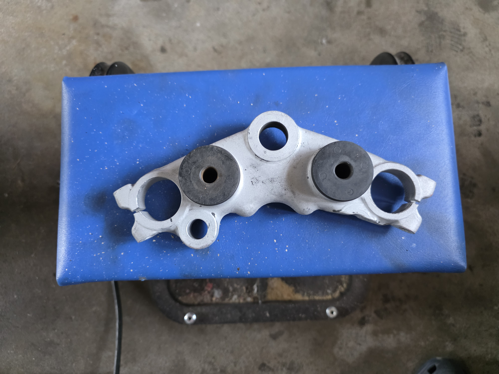

🔧 Sandblåsing i gang — ramma levert til lakk!
Nå skjer det ting! 🏗️ Sandblåseren har endelig fått kjørt seg, og i dag ble ramma levert til Oslopulverlakk. Statusoppdatering!
✅ Sandblåseren i drift
Tre dager etter oppkobling var sandblåseren i full sving. Øvre styrekrone ble blåst først — og resultatet ble overraskende bra! Gammel maling og overflaterust forsvant som dugg for solen, og det kom fram ren, rå metalloverflate. Motiverende å se når verktøyet leverer 💪

Nedre styrekrone ble blåst kort tid etter — og begge er nå tipp-topp klare for videre behandling.
🏗️ Ramme og svingarm på lakk
Dagens store milepæl: Ramme og svingarm levert til Oslopulverlakk i Rælingen! 🎉 De tar et par uker på seg, så da blir det spennende å se resultatet.
Før levering ble det gjort en siste finpuss: oljefilteret ble skrudd på plass i oljetanken for å hindre at sand og støv skulle komme inn under lakkeringen. De på Oslopulverlakk har garantert gode rutiner for masking, men det skader ikke å være føre var.
✅ Gjort siden sist
- Sandblåser i drift — øvre og nedre styrekrone blåst ✅
- Ramme + svingarm levert til Oslopulverlakk ✅
- Oljefilter på plass for å beskytte oljetanken ✅
🔜 Neste steg
- Vente ~2 uker på lakkert ramme og svingarm
- Gjennomgang av bremser (kaliper + skive)
- Planlegge motoroverhaling
- Finne ny frontskjerm
Fremdriften fortsetter — når ramma kommer tilbake i ny drakt starter monteringsfasen for alvor! 🔧🏍️